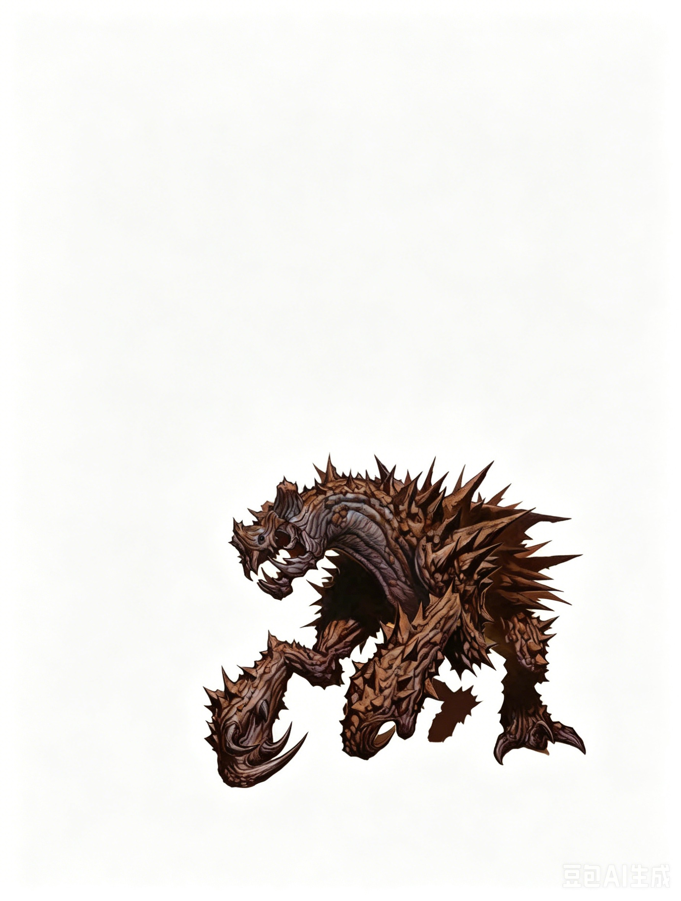

大型异怪 | 挑战级数 9这种可怖的生物以四条巨大的腿行走。它的皮肤类似于暗淡的金属，上面布满了锈迹斑斑的尖刺。
磁石掠夺者 ―― 通常绝对中立。
| 生命骰 | 11d8+66（115HP） |
| 先攻 | +5 |
| 速度 | 30 尺 (6格), 掘地 20 尺, 攀爬 20 尺 |
| 防御等级 | 24，接触 10，措手不及 23（-1体型，+1敏捷，+14天生）；磁性防御 |
| 基本攻击/擒抱 | +8 / +19 |
| 近战攻击 | 啮咬 +15 (1d8+7) 和 2次爪击 +12 (每次 1d6+3) |
| 全力攻击 | 啮咬 +15 (1d8+7) 和 2次爪击 +12 (每次 1d6+3) |
| 占据/触及 | 10 尺 / 10 尺 |
| 特殊行动 | 磁性吸引，磁性排斥 |
| 特殊能力 | 黑暗视觉 60 尺；磁性防御，稳固 |
| 抗力 | 稳固 (对抗冲撞和绊摔 +4) |
| 豁免 | 强韧 +9，反射 +4，意志 +8 |
| 属性 | 力量 24，敏捷 13，体质 22，智力 2，感知 12，魅力 8 |
| 技能 | 攀爬 +15，聆听 +8，侦察 +8 |
| 专长 | 精通先攻，多重攻击，猛力攻击，武器专攻 (啮咬) |
| 语言 | ― |
| 进化 | 12-20HD (大型) |
磁性防御 (Su)：磁石掠夺者对来自金属构成或主要由金属构成的攻击享有 +4 偏斜加值的防御等级。
稳固 (Ex)：磁石掠夺者在站立于地面时，对抗冲撞和绊摔的属性检定获得 +4 加值（但在攀爬、飞行或未稳固站立时无效）。
磁性吸引 (Su)：磁石掠夺者能在 30 尺半径范围内发出磁能脉冲，使金属物品向其飞去。携带此类物品的生物必须通过 DC 21 的反射检定，否则物品掉落在其所在位置。固定的物品（如穿戴好的盔甲）自动通过检定。根据掠夺者的决定，持有或无人持有的物品若未能通过检定，将沿直线飞向掠夺者并附着于其身体。只有在掠夺者死亡或通过 DC 21 的力量检定才能移除这些物品。检定 DC 基于体质。
磁性排斥 (Su)：此能力类似于磁性吸引，但排斥力会将物品推离掠夺者，范围为 30 尺半径爆发。携带此类物品的生物必须通过 DC 21 的反射检定，否则物品掉落在其所在位置。范围内身穿金属盔甲或携带金属盾牌的生物必须通过 DC 21 的反射检定，否则将被击倒。检定 DC 基于体质。
技能：磁石掠夺者在攀爬检定中有 +8 种族加值。即使在匆忙或受威胁时，掠夺者也可以选择攀爬检定中取 10。
磁石掠夺者是危险的异怪，贪婪地吞食肉类和金属。有时它们被训练成金库、军械库或其他要塞的守卫。
生态：磁石掠夺者是魔法实验的产物，在自然界中没有立足之地。它们最初被培育为守卫者，但大多数过于狂野而无法胜任，最终逃脱。一些仍被关押在特定场所，履行其原本的职责。
这些生物的主要活动是捕猎猎物和寻找大型金属储备。它们可以以肉类和金属物品为食。它们的身体会吸收金属，将其中的“养分”转化为增强其表皮的材料。随着磁石掠夺者的成长，其身体上的尖刺数量和大小都会增加。以未经加工的矿石为食的个体生长较慢，而以加工金属物品为食的个体则增长较快。
虽然头脑简单，但磁石掠夺者专注于进食和保护自己的狩猎领地，行为类似于领地意识极强的野生动物。体型较大、年长的个体会驱逐试图侵占领地的年轻掠夺者。
当磁石掠夺者找到食物充足的区域时，会暴饮暴食并建立巢穴。在巢穴中，它会堆积金属物品以吸引伴侣。求偶过程短暂，但一旦结为伴侣，它们通常会终生相伴。
交配后，雌性会产下 2 到 6 个被铁壳包裹的卵。父母双方会共同照料这些卵，两个月后卵会孵化。磁石掠夺者的幼崽会在父母身边生活约六个月，随后离开建立自己的领地，此后不再有家庭联系。
环境：磁石掠夺者常见于铁矿丰富的山区和地下区域。然而，有些掠夺者会进入人类聚居地，对居民造成严重威胁。
典型身体特征：磁石掠夺者是体型笨重的四足生物，身高和身长均为 10 尺，体重达 3,500 磅。它们的身体融合了金属，布满锯齿状的锈蚀尖刺，行走时依靠纤细却强壮的腿，末端长有锋利的钩爪。其口部布满能够咬碎铁和钢的多组颚齿。外观上无法区分雄性与雌性。
阵营：磁石掠夺者通常为绝对中立阵营。作为受基本需求驱动的动物性生物，它们对道德问题毫不关心。然而，其贪婪的本性有时会使其倾向于混乱或邪恶，而被训练为守卫的掠夺者偶尔会表现出守序倾向。
典型宝藏：磁石掠夺者常常携带大量金属物品，这些物品对它而言是食物而非宝藏。一只磁石掠夺者拥有的典型宝藏相当于其挑战等级的标准财物，大约价值 4,500 金币，完全由金属物品组成。
供玩家角色使用：训练一只磁石掠夺者需要六周时间，并通过一次 DC 20 的驯兽检定。掠夺者的卵在市场上每个价值 4,000 金币，而幼崽的价值为 6,000 金币。专业训练师收取 2,500 金币来培养或训练磁石掠夺者。
磁石掠夺者并非隐藏的猎手。它深知自己的磁性能力是最具威胁性的武器，并用它们来使敌人措手不及、解除武装。饥饿的磁石掠夺者会先释放磁性排斥，然后紧接着使用磁性吸引。当敌人靠近时，它会用锋利的爪子和利齿撕裂目标。
“那怪物差不多一个星期前从地底潜入了军械库。我们的战士像破布娃娃一样被抛来抛去，没人能靠近它并对其造成伤害。我们的一名地道斥候报告说，那怪物最后一次被看到时正在啃食锤子和斧头的架子。” ―― 军需官玛格达・阿姆布里希特
范例遭遇：磁石掠夺者通常独自活动。它恐吓一个地点后会在吃饱后转移。
单独行动 (EL 9)：大多数磁石掠夺者是孤立的威胁，吸引它们的是大量的金属或携带金属物品的生物。
EL 9 范例：一只成熟的磁石掠夺者最近迁入一个小男爵领地。它被那里的大量钢铁吸引而来，这些钢铁是男爵最近为军事行动做准备的结果。
成对活动 (EL 11)：磁石掠夺者会寻找伴侣，繁殖的雌雄配对会共同筑巢。
EL 11 范例：强大的死灵法师萨恩・伊尔玛特曾培养了两只磁石掠夺者，这对如今成为了伴侣，最初是用来守卫他的实验室。但它们逃脱了束缚，如今在荒野中游荡，寻找食物和栖息之地。
在艾伯伦：磁石掠夺者在 Mror Holds 很常见，它们被铁矿石的矿藏和矮人金库中的大量军械所吸引。一些有商业头脑的矮人会捕获刚出生的磁石掠夺者，并将其训练成守卫者。
在费伦：磁石掠夺者遍布整个费伦大陆。它们在幽暗地域最为常见，那里是它们猎食卓尔精灵、灰矮人以及其他地下生物的理想场所。某些胆大且技术娴熟的种族会捕捉这些生物进行驯养。
拥有 知识 (地城) (Knowledge [Dungeoneering]) 技能的角色可以了解更多关于磁石掠夺者的信息。当角色成功进行技能检定时，可揭示以下信息，包括更低 DC 的内容：
DC 19：这是一只磁石掠夺者，一种奇特的异怪。此结果揭示所有异怪特性。
DC 24：磁石掠夺者以金属物品为食，拥有吸引或排斥金属的能力。
DC 29：金属武器对磁石掠夺者的效果较差。该生物拥有某种偏斜力场。
DC 34：磁石掠夺者足够聪明，可以被训练成守卫者。